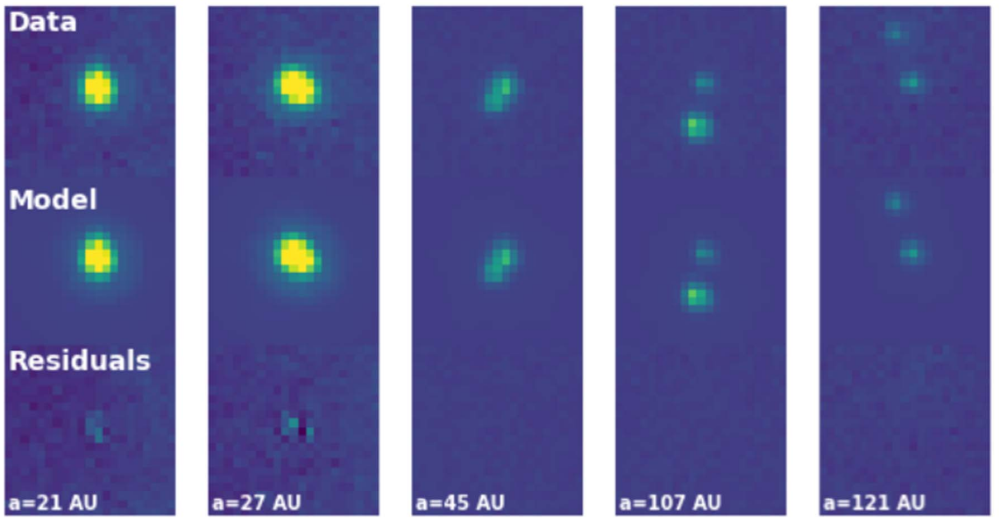

{kind=link}

The first identification of a turnover in the initial mass function within a stellar population, NGC 2024. See link for NASA Press Release.
Using my double PSF-fitting algorithm, I explored HST/ACS mosaic images of the Orion Nebula Cluster (ONC), searching for companions to brown dwarfs. Young brown-dwarf multiplicity is thoroughly underexplored due to their faintness and low sample sizes. In the ONC, I identified seven companions to 75 brown dwarfs at separations > 10 au, a population rarely seen in the field. With my Bayesian demographic analysis, I demonstrated that the companion frequency of brown dwarf primaries in the ONC is in excess of the field, but likely to be dynamically disrupted over the lifetime of the ONC. Therefore, brown dwarf binary systems are more common outcomes of the turbulent fragmentation process than we previously thought, seemingly occurring as frequently as low-mass stars over separations 20-200 au. See De Furio et al. (2022) for more information.
We are planning to apply my same empirical PSF-fitting code to data in NGC 1333 and NGC 2024 to determine if brown dwarf multiplicity is identified in more star-forming regions and if environment plays any role in its formation and evolution.
As a part of the JWST NIRCam and NIRISS science teams, I led the data analysis for a portion of GTO-1189, searching for a companion to WISE1828, a suspected Y-dwarf binary. I developed empirical PSF models for NIRCam and NIRISS and demonstarted the ability to recover companions down to 0.5λ/D, or ~ 50 milli-arcseconds on the long-wave channel detector of NIRCam. While I found no companion to WISE1828, we set limits down to 0.5 au in separation. On other JWST collaborations, we used my double PSF-fitting algorithm to detect the first Y-Y dwarf binary system, WISE0336, with NIRCam as a part of GO 2473 (co-PIs: Albert, Meyer). With data from GO 2124 (PI: Faherty), I detected the second Y-Y dwarf binary system, WISE1935, with MIRI. These two systems are likely two of the coldest compact objects directly detected outside of the solar system, and demonstrate that multiple formation continues down to the lowest mass we have been able to probe. See Calissendorff, De Furio et al. (2023) and De Furio et al. (2025) for more information.

I am also co-PI on an HST archival program (AR 17561) to perform a uniform multiplicity survey of the field brown dwarfs observed with WFC3/IR and WFPC2/PC on HST using my double PSF-fitting algorithm. With a sample size > 200, we will perform the largest brown dwarf multiplicity survey to date. In Mehta, De Furio et al. (2025), we demonstrated the ability to resolve companions down to sub-pixel and sub-diffraction limited scales using my PSF-fitting code on WFC3/IR, despite its severe undersampling, a ~3x improvement on past analyses of these data. This survey is ongoing with results expected in 2026. I am interested in applying this technique to large datasets, particularly those taken with Roman and Euclid, to perform the largest brown dwarf multiplicity surveys by multiple orders of magnitude.

The first identification of a turnover in the initial mass function within a stellar population, NGC 2024. See link for NASA Press Release.
Detection of the second Y-Y dwarf binary system ever, WISE1935-1546, using JWST/MIRI probing the lowest mass binaries in the Galaxy. See link for paper.
Resolving companions below the diffraction limit with HST WFC3/IR. See link for paper.
For inquiries about collaborations, details about my research and outreach, or general questions, please reach out to me through email.